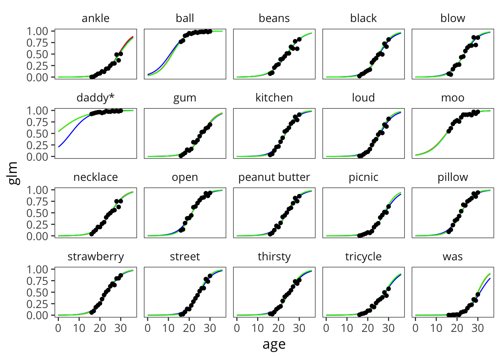
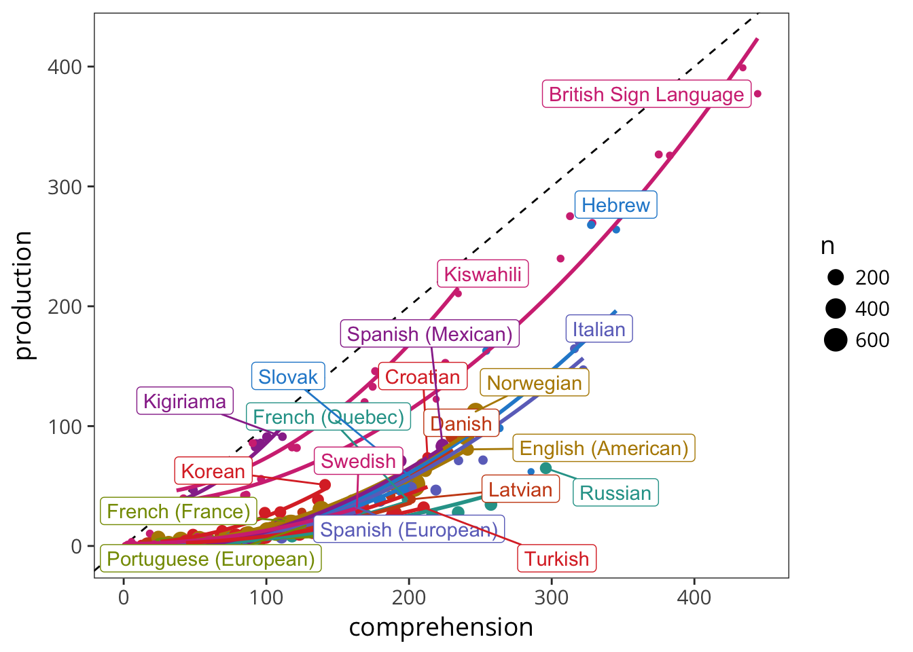
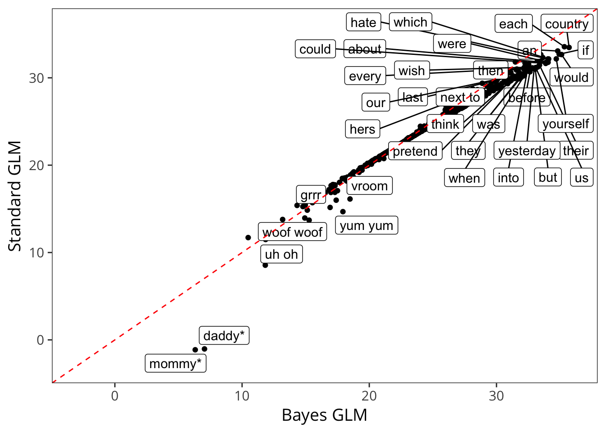

E Estimating Total Vocabulary
First, connect to the Wordbank database and pull out the English WS and WG data.
Now aggregate by item.
Now arrange.
Plot this with a glm sinusoid like in the Mayor & Plunkett (2011) paper.

Try a polynomial fit.

Doesn’t work that well for the younger ages, though looks fine later.
Note age interactions in the stats.
#>
#> Call:
#> glm(formula = produces ~ index * age, family = "binomial", data = ordered)
#>
#> Deviance Residuals:
#> Min 1Q Median 3Q Max
#> -0.50672 -0.09538 -0.01262 0.07183 1.16279
#>
#> Coefficients:
#> Estimate Std. Error z value Pr(>|z|)
#> (Intercept) -4.688e+00 2.839e-01 -16.514 < 2e-16 ***
#> index -7.773e-03 8.480e-04 -9.166 < 2e-16 ***
#> age 2.639e-01 1.252e-02 21.089 < 2e-16 ***
#> index:age 9.147e-05 3.489e-05 2.622 0.00875 **
#> ---
#> Signif. codes: 0 '***' 0.001 '**' 0.01 '*' 0.05 '.' 0.1 ' ' 1
#>
#> (Dispersion parameter for binomial family taken to be 1)
#>
#> Null deviance: 4141.07 on 10199 degrees of freedom
#> Residual deviance: 174.34 on 10196 degrees of freedom
#> AIC: 5981
#>
#> Number of Fisher Scoring iterations: 5E.0.1 Further thoughts on Mayor & Plunkett model
The Mayor & Plunkett (2011) model has two corrections. The first uses the parametric form of the logistic to fill in low-frequency words that are not on the CDI, the second uses the difference between diary study counts and CDI counts to find a multiplier for higher-frequency words that are omitted.
I think there’s a bit of a conceptual issue here, as these two corrections should essentially be the same thing - there are some words that are not on the CDI, and more of these are the low frequency/hard words. So really, it all is a correction for missing words.
Also - the first correction, which depends on the parametric form of the logistic, is much much smaller than the second. Take a look at this.
Equation 3:
\[ p(w_i) = 1 - \frac{1}{1 + e^{\frac{-(i-a)}{b}}} \]

So adding the gray area gives us
\[ V_{corr_1} = b \log (1 + e^(a / b)) \]
but then adding the second correction is just a multiplier on this:
\[ V_{corr_2} = \alpha * V_{corr_1} \]
Note that (strikingly), M&P2011 never give their value of \(\alpha\) in the text. I estimate it below so that I can make an estimate of what correction 2 actually looks like…

So you can see that the second correction dwarfs the first correction in size, and is really based on a few small diary studies.
In sum, I’m worried about this model for a few reasons:
- The distributional form (logit) is clearly not correct, so using this distributional form for extrapolation may have bad consequences.
- The first and second corrections aren’t conceptually distinct: they both concern missing words. Both have to do with the sampling of words on the CDI from the broader vocabulary.
- The second correction, which does most of the work, is - for reasonable reasons of data etc.- assumed to be a strict multiplier, which makes it do a ton of work at the higher end of vocabulary.